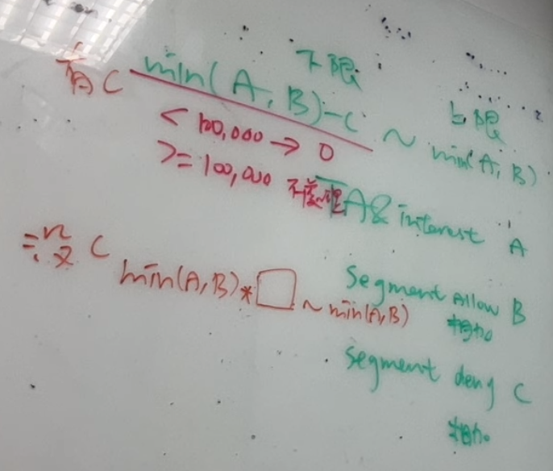

年齡性別, 興趣特定議題 的量體預估, 公式由 BDCD 決定, ITO 實作
受眾組合量體預估由昨天決定的公式計算, ITO 實作
待釐清
受眾組合是否可以只選受眾包(包含||排除)？> 2023年9月1日 PM: 不行, 年齡性別一定要選
年齡性別, 興趣特定議題, 受眾包 可以只設定其中一個, 使用者沒有選擇相當於全選
廣告查詢時, 年齡性別, 興趣特定議題, 受眾包 這三個設定的條件必須都要滿足

|
|
|
|
|
|---|---|---|---|
| 1 |
廣告活動受眾包對應的年齡性別和受眾組合的年齡性別相衝突時, 怎麼防呆? |
會影響時程, 未來再處理
又或者 BDCD 這邊需要提供詳細的性別年齡分布資訊, 才有辦法做進一步的判斷 |
|
| 2 |
年齡性別 UI 機制調整 |
|